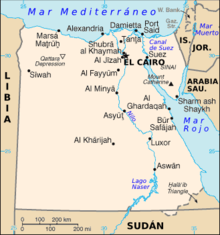

<html>
<meta charset="UTF-8">
<!DOCTYPE html>
<html>
<head>
<body>
<h1><p align="center">  </p></h1>
<link rel="stylesheet" href="estilos.css">
</head>
</body>
</html>
<center>
<center>
<p>Capital:El Cairo 
<p>Historia:Las continuas injerencias británicas mantenían una inestabilidad política hasta que en 1952 un golpe de estado forzó al rey Faruk I a abdicar y llevó al gobierno al coronel Gamal Abdel Nasser, como Presidente del nuevo gobierno. Nasser declaró la titularidad pública del Canal de Suez lo que supuso una importante mejora para la Tesorería egipcia, aunque para ello tuvo que enfrentarse militarmente en 1956 a las tropas conjuntas francesas, inglesas e israelíes que intentaron derrocar al gobierno sin conseguirlo (Crisis de Suez). Esta victoria militar colocó a Nasser a la cabeza de los líderes de Oriente Medio y como ejemplo a seguir por el mundo árabe para desembarazarse de las injerencias extranjeras. 
<p>Politica:Actualmente la República Árabe de Egipto es una república democrática parlamentaria cuyo presidente, como jefe de Estado y comandante supremo de las fuerzas armadas del país, representa al poder ejecutivo elegido por elecciones populares para un período de cuatro años. Se puede volver a votar al mismo presidente unicamente una vez más.</p>
<p>Geografía: está ubicado mayoritariamente en el extremo noreste de África mientras que en Asia, se encuentra en la península del Sinaí. Limita con Sudán al sur, con Libia al oeste y con el Estado de Palestina e Israel al noreste. Al norte limita con el mar Mediterráneo y al sureste con el mar Rojo.
<p><a href="../index.html">¿Esta no es el pais que buscabas?<a><p> 

 


</html>
